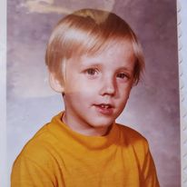
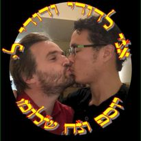

Childhood

On the first of May 1973, I was born on a C-5 over the Atlantic Ocean. I was a month over due
and my family jokes that it was just to avoid being born in Florida. As a child I spent most of my life
living on US military bases in Europe with brief stints in Korea, Okinawa, Philippines and one summer in
Australia. At most bases access to the "off-base" or civilian world was limited. This was due to a
wide variety of cultural, societal or environmental differences and hazards that the US Department of Defense deemed
unsuitable for dependent minors. This was alleviated by the self contained cities that bases are. One of those activities
was scouting. I truly enjoyed every aspect of scouting. Most of my time outside of school was spent in scouting related
activities.
/p>
The first time I was in the US I was 14. I came to Philmont Scout Ranch in Cimarron, New Mexico. Some people
come to America and they get to see the Statue of Liberty. Others are welcomed by the Golden Gate Bridge.
I got "Chevy on a stick".
Adulthood

My first forays into academia were as an undergraduate at the University of Oklahoma in Norman, Oklahoma.
To say it was traumatizing is an understatement. I wasn't prepared to shift from Living in Europe and
the order of the military bases to the chaos of civilian life punctuated by a community where everything
I am is offensive. My first year I worked in the engineering computer lab. It was unfathomably depressing
so I became an RA. After a semester of babysitting, I gave up. It was at this time i took my first job in
corrections at the county level. I spent my weekends booking classmates for public intoxication mostly
and overseeing drunk tank operations. I found I enjoyed the work and switched majors, during my senior year
of all things, to Criminal Justice and Pre-Law. I became a seven-year senior. In the end I left with three
degrees.
After college I decided I didn't want to work at the county level and especially in Oklahoma. So I appllied
to the Federal Law Enforcment Training Center FLETC. After twenty weeks of training, I took my
first federal position in Molokai, HI. I was there three years before moving to Federal Correctional Center
FCC Brooklyn. While I was there I worked on and got 2 masters degrees from New York University
and City University of New York, John Jay College of Criminal Justice. My NYU is in
Psychometrics and my JJCCJ degree is in Forensic Psychology.
After completing the course work for my Doctorate, I was transferred to the Federal Intake and Assessment
CenterFIAC Raymond in Southern Maine. It was here that I adopted my son, Ari. I was at FIAC
Raymond until 2007 when I took the Wardens' Board, passed and was made underwarden at the old
Federal Inmate Detention and Transfer CenterFIDTC Albuquerque. In 2008 I met my Husband Noah In 2013
I was diagnosed with Multiple Sclerosis and was medically retired. In 2015 several things happened. In March I
finished and defended my doctoral dissertation on "Victomological Origination and Predeterminance in Nonviolent
Nonfamilial Child Sex Offenders", I was raised a master Mason and Married my husband. My MS went into
remission during the pandemic and was cleared to return to work in March of this year. So I enrolled in this class.
50 fact about me for my 50th
- I’m a taurus
- My favorite show is M*A*S*H
- I’ve been an EMT since I was 16
- I’m a full blown Trekkie as opposed to a Trekker (Trekkie=trivia, cosplay, clubs trekker=Trivia but non nerd)
- In my Trek persona I’m an EMH (Emergency Medical Hologram)
- Cat person by far. I only tolerate well behaved dogs
- Eagle Scout with five Palms
- I have a full collection of series 1a Garbage Pail Kids
- I'm the first PhD in my family
- I’m a proud Air Force Brat; its an honorific not derogatory
- I have Transitive heterochromia (my eyes change color and can be different colors)
- My left eye reflects light like a cats (artificial lens)
- Avid milk drinker and dairy enthusiast
- I have Autism.
- My Bar mitzvah reading was Becha’alotcha (the Israelites receive instructions regarding Pesach/Passover.
They journey forth from Sinai)
- Passover or Pesach is my favorite holiday
- I love theme parties
- I was on my prom committee but didn’t go. (It conflicted with D&D)
- I was at the Grand Opening of New World Comics in Del City OK when it was next to Homeland/Peter Piper Pizza (44th and Sunnylane)
- I grew up bi-religious LDS Jewish
- My parents never divorced, separated yes, but never divorced
- I collect degrees like baseball cards
- The most recent song on any of my Spotify playlists is from Coldplay
- I prefer Ziggy Stardust Bowie to plain Bowie
- First Concert was Echo and the Bunnymen
- I’m allergic to Pot and most opioid analgesics
- At a bar I order wine, sweet vermouth martinis or foofy fruity tiki drinks
- My favorite cologne is Burberry Touch been through 4 bottles
- I still have my bottles of Polo green from 8th grade, Drakkar noir from HS and CK1 from OU.
- My first celebrity crush was Wil Wheaton
- I have multiple sclerosis
- My favorite video game franchise is Fallout
- I would attend my sisters ballet classes as a kid. Had a scholarship to American Conservatory of Dance before I
was in a car accident that broke my left tibia that left me with a permanent limp.
- My high school crush was a guy named Danny M.
- My first boyfriend was a guy named Nathan
- My favorite color is Olive Drab hexcode: 6B8E23
- I've been in 98 countries and filled 3 passports
- I’ve been arrested by MP/SPs twice
- I was in Berlin when the wall came down
- I’ve met 3 popes. (2 before they were pope though but still counts)
- I won a national playwriting competition in 11th grade
- My favorite movie is A League of Their Own
- I have acted in 3 international tours (if USO counts but they were Equity shows)
- I did a forensic interview of Michael Jackson for the prosecution. (I don’t think he did it)
- My Dissertation was on Serial Child Sexual Assailants
- I wrote a short story that was published in the New Yorker Fall Anthology
- My Pen name is not the same as my stage name which is not my legal name nor my birth name
- In 3rd grade my IQ was estimated to be 168
- I speak 9 languages, English, ASL, Hebrew, German, Yiddish, Polish, Danish, Czech and Russian/Ukrainian
- I was a first Responder to the Oklahoma City Murrah Building Bombing as a Firefighter Paramedic and
because of my size I was on Recovery Team 14 on the 7th floor. In turn out gear I still only weighed 128lbs so
unlikely to dislodge any debris.